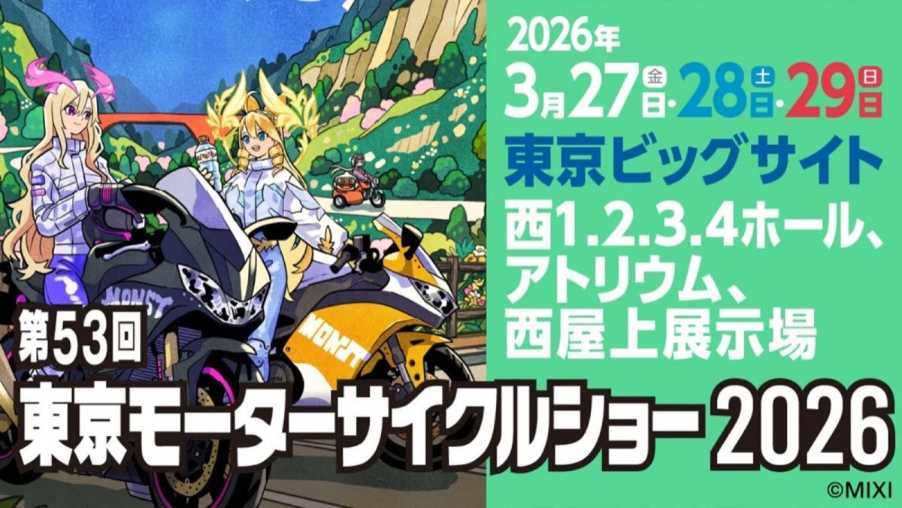
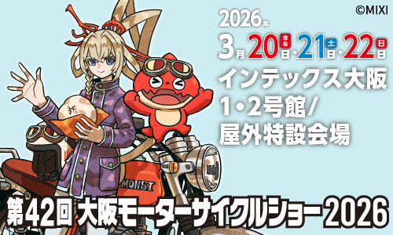
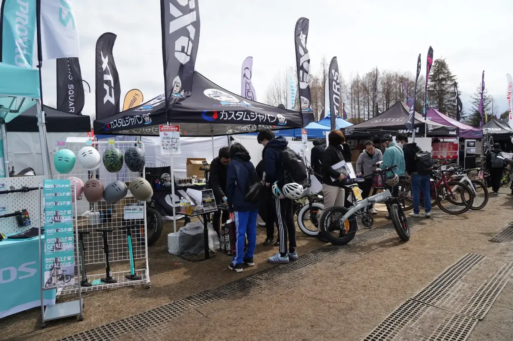
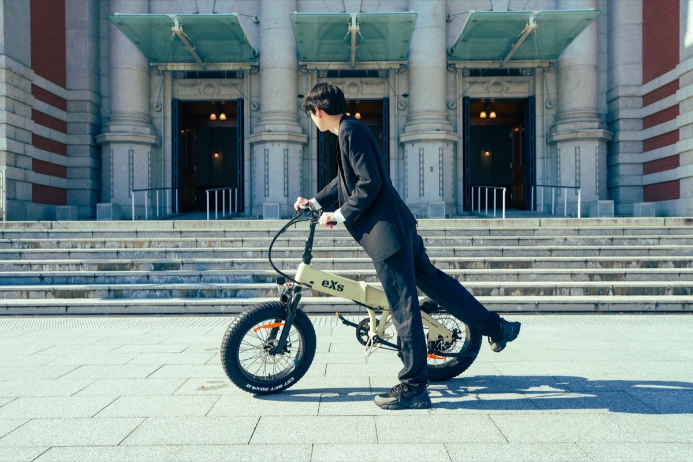

“コカ·コーラ” 鈴鹿8時間耐久ロードレース 第47回大会
バイクの祭典・鈴鹿8耐に初出展しました。ナンカイビレッジ内ブースにて、音声コントロール対応インカムASMAX、SHADのTERRAシリーズ・SH38X、CarPlay対応スマートライドディスプレイSRD5、SAP2000などスマートシリーズの最新ガジェットを展示。レポートは近日公開予定です。
EVENTS & RACING
現場で、走りと出会う。ショー・レース・万博での活動
2026 ACTIVITIES
バイクの祭典・鈴鹿8耐に初出展しました。ナンカイビレッジ内ブースにて、音声コントロール対応インカムASMAX、SHADのTERRAシリーズ・SH38X、CarPlay対応スマートライドディスプレイSRD5、SAP2000などスマートシリーズの最新ガジェットを展示。レポートは近日公開予定です。

ELEVEITの日本総代理店として、またTIMSUNのオフィシャルタイヤサポートとして、国内トップカテゴリーのオフロードレースを支えています。世界王者スティーブ・ホルコムが開発するブーツと、実戦で鍛えられたタイヤを日本のオフロードシーンへ。

創業20周年を記念し、過去最大ブース規模で出展。TIMSUN・SHAD・カスタムジャパンの3ブランド体制で、タイヤからケース、スマートガジェットまでを一挙に展示しました。

ASMAX「EVA R（エヴァンゲリオン レーシング）モデル」や話題のスマートシリーズを一挙展示。ハズレなしの来場者参加型イベントも開催し、多くのライダーにご来場いただきました。

次世代モビリティブランド「eXs」が日本最大級のスポーツサイクルフェスティバルに初出展。万博記念公園での特別試乗会や、SHADの都市型自転車ライン「Shad Bikes」（Brompton専用モデル含む）の展示公開も実施しました。

スマートモビリティ万博サプライヤーとして、次世代モビリティ「eXs」がスムーズな会場運営を支援。未来社会のラストワンマイルを、実際の現場で走らせました。